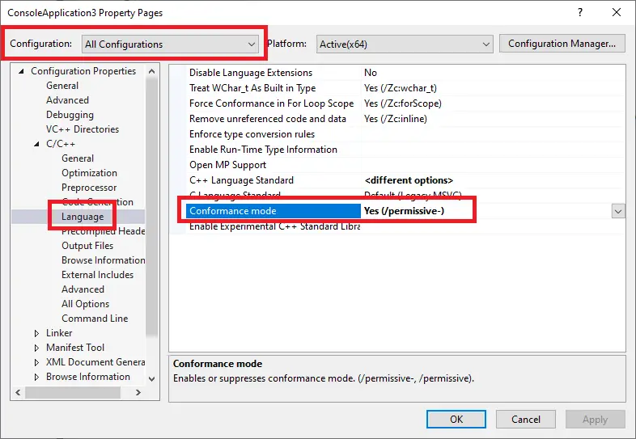
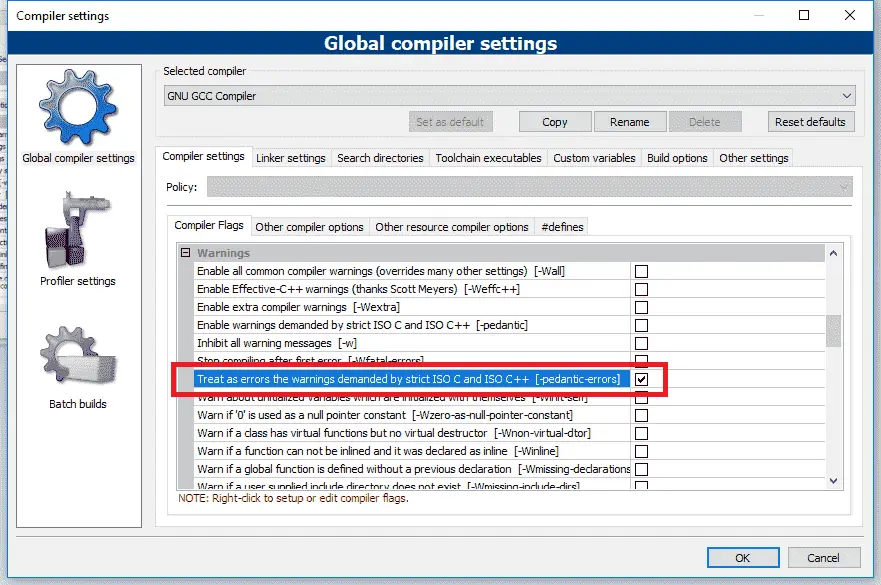

0.10 — Configuration de votre compilateur : extensions du compilateur
La norme C++ définit des règles sur le comportement attendu des programmes dans des circonstances précises. Dans la plupart des cas, les compilateurs suivent ces règles. Cependant, de nombreux compilateurs implémentent leurs propres modifications du langage, souvent pour améliorer la compatibilité avec d'autres versions du langage (par exemple C99), ou pour des raisons historiques. Ces comportements propres à un compilateur sont appelés extensions du compilateur (compiler extensions).
Écrire un programme qui utilise une extension du compilateur permet d'écrire des programmes incompatibles avec la norme C++. Les programmes utilisant des extensions non standard ne seront généralement pas compilés par d'autres compilateurs (qui ne prennent pas en charge ces mêmes extensions), ou, s'ils le sont, ils risquent de ne pas fonctionner correctement.
Ce qui est frustrant, c'est que les extensions du compilateur sont souvent activées par défaut. C'est particulièrement dommageable pour les débutants, qui peuvent croire qu'un comportement qui fonctionne fait partie de la norme officielle du C++, alors que leur compilateur est simplement trop permissif.
Comme les extensions du compilateur ne sont jamais nécessaires et rendent vos programmes non conformes aux normes C++, nous vous recommandons de les désactiver.
Bonne pratique
Désactivez les extensions du compilateur pour que vos programmes (et vos pratiques de codage) restent conformes aux normes C++ et fonctionnent sur n'importe quel système.
Désactiver les extensions du compilateur
Pour les utilisateurs de Visual Studio
Pour désactiver les extensions du compilateur, faites un clic droit sur le nom de votre projet dans la fenêtre Explorateur de solutions, puis choisissez Propriétés :

Dans la boîte de dialogue Projet, commencez par vérifier que le champ Configuration est défini sur Toutes les configurations.
Ensuite, cliquez sur C/C++ > onglet Langage, et définissez Mode de conformité sur Oui (/permissive-) (si ce n'est pas déjà le cas par défaut).

Pour les utilisateurs de Code::Blocks
Désactivez les extensions du compilateur via menu Settings > Compiler > onglet Compiler flags, puis recherchez et cochez l'option -pedantic-errors.

Pour les utilisateurs de gcc et Clang
Vous pouvez désactiver les extensions du compilateur en ajoutant l'option -pedantic-errors à la ligne de commande de compilation.
Pour les utilisateurs de VS Code
- Ouvrez le fichier tasks.json, repérez
"args", puis la ligne"${file}"dans cette section. - Au-dessus de la ligne
"${file}", ajoutez une nouvelle ligne contenant la commande suivante :
"-pedantic-errors",
Au moment où nous écrivons ces lignes, VS Code n'ajoute pas automatiquement de saut de ligne à la fin des fichiers de code qui n'en possèdent pas (ce qui est pourtant exigé, de façon pointilleuse, par la norme C++). Heureusement, nous pouvons demander à VS Code de le faire :
- Ouvrez VS Code et allez dans File (Code sous Mac) > Preferences > Settings. Cela ouvre une boîte de dialogue de paramètres.
- Saisissez
insert final newlinedans la barre de recherche. - Dans les onglets Workspace Settings et User Settings, vérifiez que la case intitulée Files: Insert Final Newline est cochée.
Contenu associé
Les utilisateurs de Xcode peuvent consulter le commentaire de Rory, qui a aimablement fourni des instructions.
Un rappel
Ces paramètres s'appliquent projet par projet. Vous devez les définir à chaque création d'un nouveau projet, ou créer une fois un projet modèle avec ces paramètres et l'utiliser pour créer les nouveaux projets.
Source originale : https://www.learncpp.com/cpp-tutorial/configuring-your-compiler-compiler-extensions/